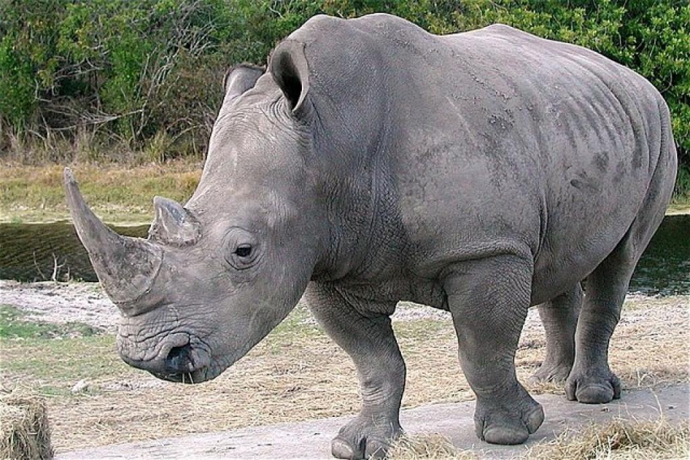

Contoh Tabel: Baris dan Kolom Rentang |
| Contoh Tabel Kompleks |
|  |
Perbandingan Badak Jawa dan Sumatra |
||||
Family |
Habitat |
Average Life Span |
Order |
Bentuk Fisik |
|
Badak Bercula 1 |
Rhinocerotidae | di Jawa Barat, di gunung-gunung yang memiliki tinggi di atas 2.000 mdpl. | Hingga umur 35 sampai 40 Tahun | Herbivora | -Tingginya sekitar 120-135 cm -Badak betinanya tidak memiliki cula |
Badak Bercula 2 |
Rhinocerotidae | DI hutan dan biasa hidup di hutan-hutan Sumatra pada dataran yang cukup rendah | Hingga 30 Tahun | Herbivora | -Tinggi sekitar 168-175 cm -Badak betinanya memiliki cula |